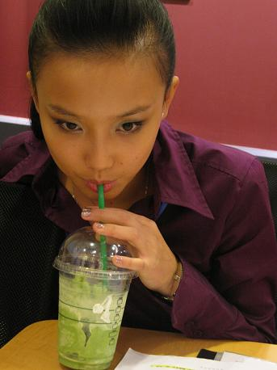
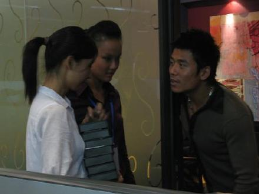
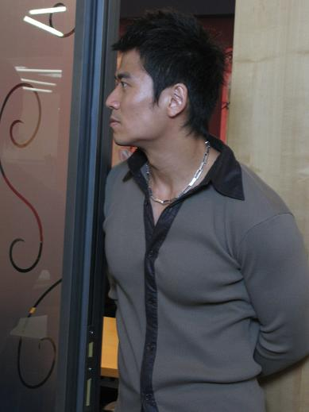
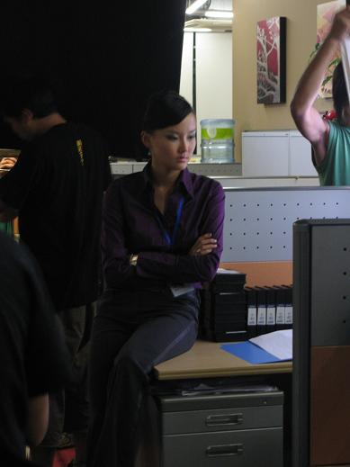
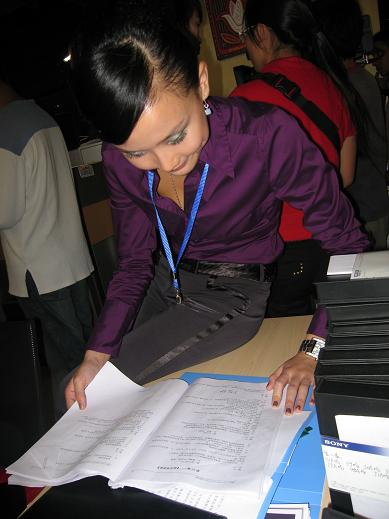
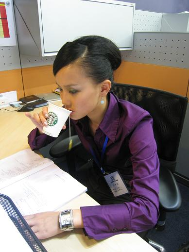
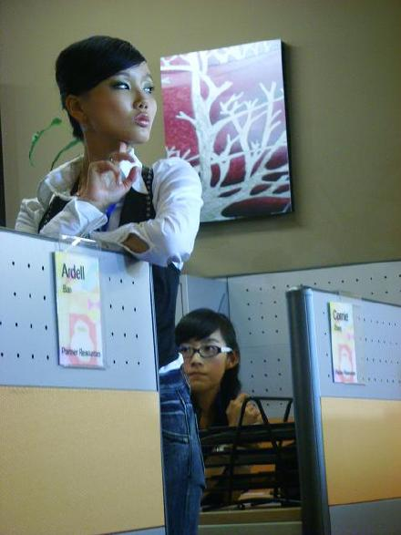
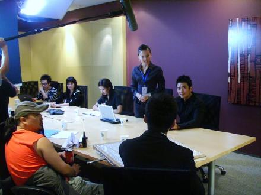

《晴天日记》拍摄最舒服的地方...有免费星冰乐喝,还有烤面包,还有超级大会议室休息,健身房,浴室...又大又漂亮环境超级好的星巴克办公室...

NICE总监-唐文龙

总监的大肌肉很性感,他正在看我的表演,他一直在教我怎么演得更加好...

半夜12点噢!前一天晚上为了庆祝晓明哥杀青,全剧组都跑去钱柜唱K到凌晨4点..

忙并快乐着...

什么表情,我自己也说不清楚
工作中的SUKI

拗造型的SUKI

开大会拉...高傲的SUKI向高总介绍着自己
